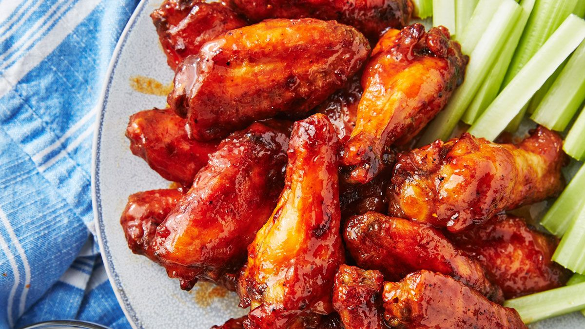

Chicken wings

Chicken wing is an unbreaded chicken wing section
A Buffalo wing in American cuisine is an unbreaded chicken
wing section (flap or drumette) that is generally
deep-fried, then coated or dipped in a sauce consisting
of a vinegar-based cayenne pepper hot sauce and melted
butter prior to serving.
Ingredients
- 4 pounds chicken wings
- 2 Tablespoons baking powder
- 3/4 teaspoon salt
- 1/2 teaspoon cracker black pepper
- 1 teaspoon paprika
- 1 teaspoon garlic powder
- 1/3 cup Frank's Wings Hot Sauce
- 1 1/2 cups light brown sugar
- 1 Tablespoon water
Steps
- Adjust your oven rack to the upper-middle position.
- Line a baking sheet with aluminum foil and place a wire rack on top.
- Use paper towels to pat the wings dry and place them in a large bowl. It's important to dry them REALLY well!
- Combine the salt, pepper, garlic powder, paprika, and baking powder in a small bowl. Then sprinkle the seasoning over the wings, tossing to evenly coat.
- Arrange wings, skin side up, in single layer on prepared wire rack.
- Bake on the upper middle oven rack, turning every 20 minutes until wings are crispy and browned. The total cook time will depend on the size of the wings but may take up to 1 hour.
Home